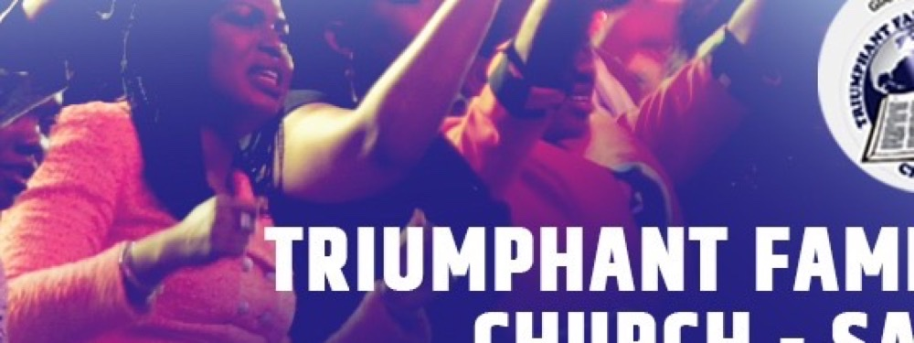

External Appointment & Cross-Branch Trust
How externally appointed leaders earn or lose the trust of groups they did not rise through. Focus on leader prototypicality, legitimacy and follower support across Army, Navy and Air Force boundaries.
INITIALIZING CURATED DOSSIER 0%
>> establishing secure channel
CAF PERSONNEL SELECTION OFFICER // PHD PSYCHOLOGY · UALBERTA
First-year PhD student in Psychology at the University of Alberta (Rast Lab) and a Personnel Selection Officer in the Canadian Armed Forces, studying how leaders span group boundaries to build trust, cooperation and psychological empowerment across branches of service.

ANSAH-ADDO, NANCY
PSO · CANADIAN ARMED FORCES
FILE 01 // PERSONNEL DOSSIER
I study how leaders bring divided groups together, and what happens to trust, cooperation and empowerment when someone from outside the group takes command.
I am a first-year PhD student in Psychology at the University of Alberta, working in the Group Processes and Leadership Lab under Dr. David Rast III, and I serve as a Personnel Selection Officer in the Canadian Armed Forces, the behavioural-science specialists who advise commanders on selection, leadership and personnel research. My doctoral research examines external appointment and boundary-spanning leadership in the Canadian Armed Forces, and its effects on cross-branch trust, cooperation and psychological empowerment.
My path has run from Ghana to Denmark to Canada: a Master of Philosophy in Psychology (University of Ghana), a Master of Arts in African Studies (University of Copenhagen), and now doctoral work at the intersection of social psychology and organizational behaviour: social identity, intergroup relations, leadership and group processes, applied where it counts.
FILE 02 // RESEARCH BULLETIN
CURRENT OPERATION · DOCTORAL RESEARCH
When a leader is appointed from outside the group, across branches, trades or units, what happens to trust, cooperation and psychological empowerment? My doctoral work applies social identity and group-processes theory to external appointment and boundary-spanning leadership in the CAF, studying how leaders bridge profound intergroup boundaries to build a unified identity and achieve a joint mission.
How externally appointed leaders earn or lose the trust of groups they did not rise through. Focus on leader prototypicality, legitimacy and follower support across Army, Navy and Air Force boundaries.
The mechanisms by which boundary-spanning leaders convert intergroup division into cooperation, and how shared identity psychologically empowers members to act as one unit under pressure.
As a Personnel Selection Officer, the CAF's behavioural-science specialists, I work where psychology meets the profession of arms: selection, leadership, performance appraisal and applied personnel research.
Foundational programme on how perceived social support and socioeconomic status shape maternal psychological health, grounded in Ghanaian hospital cohorts and extended across cultures (MSPSS, DASS-42).
INTERACTIVE EXHIBIT · ILLUSTRATIVE TOY MODEL
Steer three leadership parameters and watch predicted group outcomes respond in real time. Weights are illustrative, not empirical estimates.
TOY MODEL · TRUST = .45 PROTO + .35 IDENTITY + .20 PERMEABILITY · COOPERATION = .30 PROTO + .50 IDENTITY + .20 PERMEABILITY · EMPOWERMENT = .25 PROTO + .45 IDENTITY + .30 PERMEABILITY
RESEARCH APPARATUS
Experimental design & controlled lab studies of group processes
Field research in defence settings · cross-branch samples
Psychometrics & statistical analysis · SPSS and survey pipelines
Clinical interviewing & psychodiagnostic assessment
FILE 03 // PUBLISHED WORK
ANSAH-ADDO, N. (2020) · UNIVERSITY OF COPENHAGEN, DENMARK
Interdisciplinary thesis on the intersection of culture and psychology, examining the social scaffolding that protects maternal mental health around childbirth.
ANSAH-ADDO, N. (2019) · UNIVERSITY OF GHANA
A quantitative study of maternal psychological health, perceived social support (MSPSS) and distress (DASS-42) among mothers attending Ghana's largest teaching hospital.
ANSAH-ADDO, N. (2012) · SEMINAR PRESENTATION
Early seminar work on trait-level differences in stress responding and the management strategies that sustain performance under pressure.
RESEARCH PRESENTATION · INTERNATIONAL FORUM
Presented findings connecting maternal psychosocial support and economic status to psychological wellbeing across lower-resource settings.
MANUSCRIPT · CLINICAL & CROSS-CULTURAL REVIEW
A review and empirical discussion of anxiety assessment and its correlates in low-resource and developing-country settings, integrating psychometric and clinical perspectives.
MANUSCRIPT · FORENSIC-COGNITIVE PSYCHOLOGY
Analysis of the psychological factors, memory, suggestibility and stress, that shape the reliability of child eyewitness accounts in investigative contexts.
COLLECTED PSYCHOMETRIC STUDIES
A body of psychometric work on the reliability and validity of psychological measures, with a focus on adapting instruments across culturally distinct populations.
FULL-TEXT COPIES AVAILABLE ON REQUEST. DOI / CITATION METADATA TO BE ADDED ON PUBLICATION.
FILE 04 // OPERATIONS LOG
2026 – PRESENT
University of Alberta · Supervisor: Dr. David Rast III
2023
2Point Delivery Limited · Regina, SK · CA
2021 – 2023
Topaz ApS · Brøndby, Denmark
2020
University of Copenhagen · Copenhagen, Denmark
2013 – 2016
University of Ghana · Accra, Ghana
2020 – 2021
University of Copenhagen · Copenhagen, Denmark
MAY – DEC 2020
University of Copenhagen · Copenhagen, Denmark
2018
IMARIT · Copenhagen, Denmark
2013 – 2016
University of Ghana · Accra, Ghana
FILE 05 // INSTRUCTION LOG
UNIVERSITY OF COPENHAGEN
UNIVERSITY OF GHANA
FILE 06 // COMMS NODE
ANSAH ANSWERS YOU · SCRIPTED CONCIERGE
A scripted assistant answering straight from this site's dossier: research, contact channels, lab, service and collaborations. Nothing you type leaves your browser.
Request the full CV and publication record for review, meetings and committee purposes.
FILE 08 // JOINT OPERATIONS
I actively seek collaborators across social, organizational and cross-cultural psychology, student co-supervision, defence and leadership research, instrument adaptation, and experimental studies of group processes. Submit a request below; it is delivered straight to both inboxes, no mail app needed.